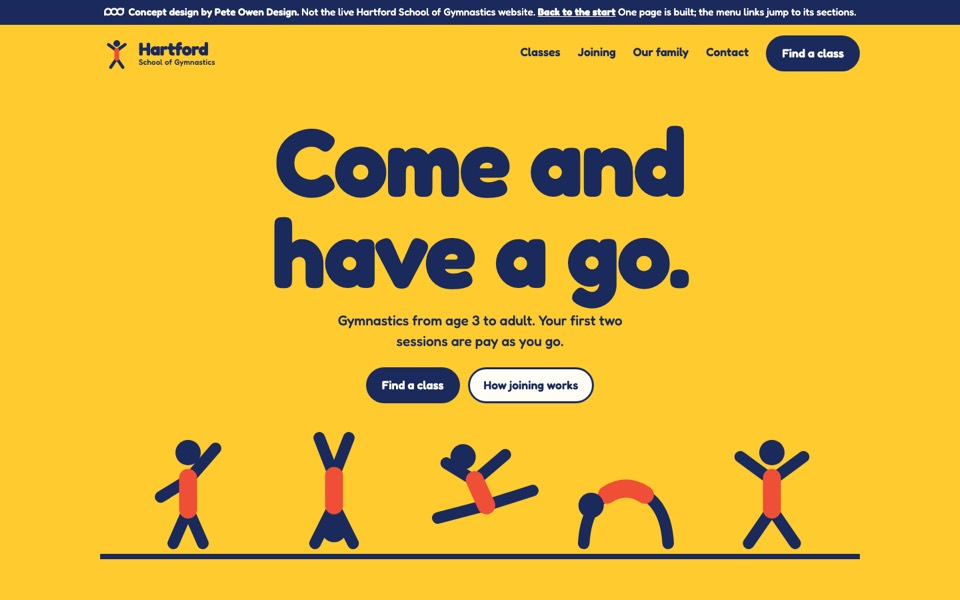
Have a Go
A sunny, friendly homepage built around one invitation for children and parents: have a go.
We spent some time with your current website and put together two things for you to look at: a plain-English check of how easily people and AI assistants can find you online, and a design concept for a new website.
Open any of them to scroll through the whole page. Nothing here is final, and nothing on your current website has been changed.

A sunny, friendly homepage built around one invitation for children and parents: have a go.
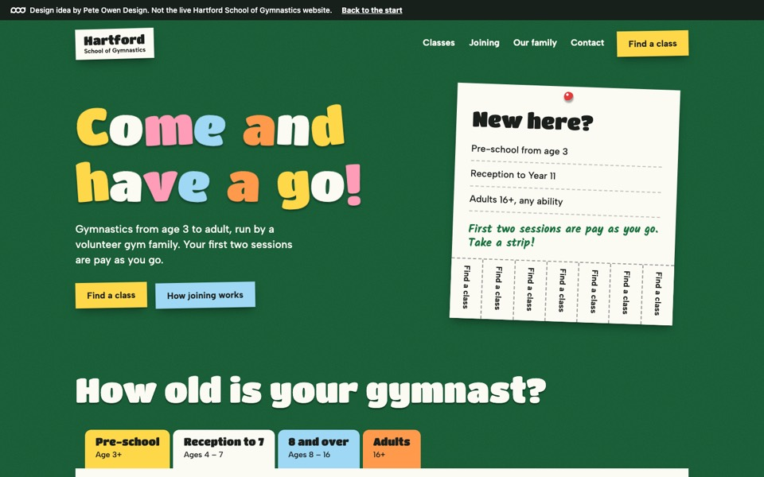
The site as the club's own noticeboard: pinned paper, cut-out letters, pen marks and a FULL stamp.
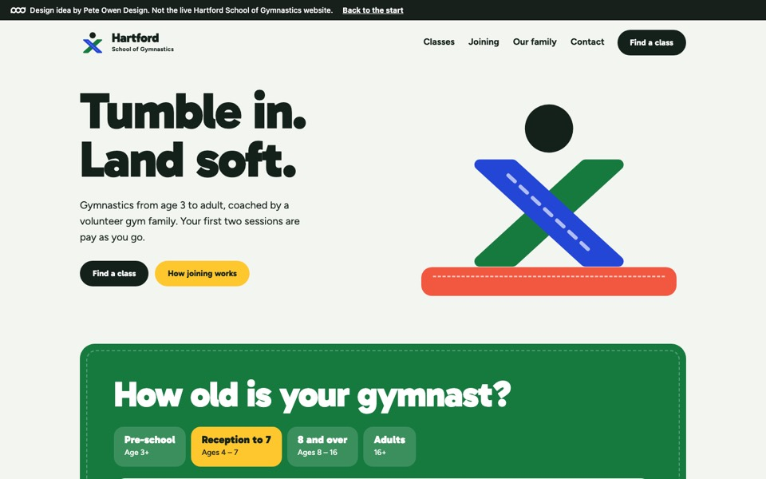
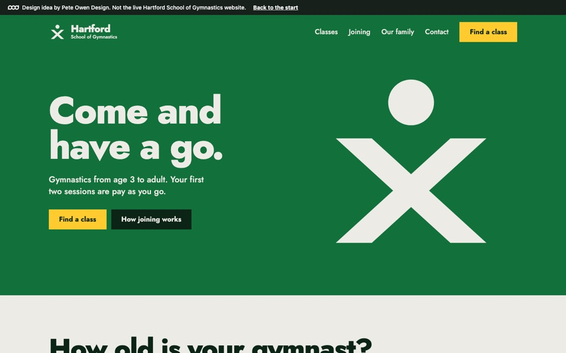
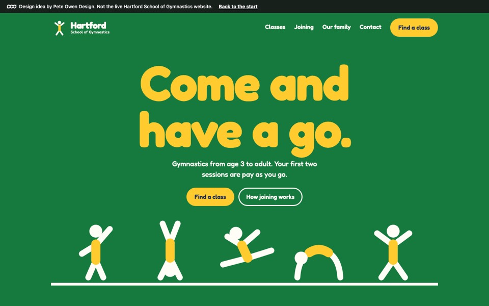
Bendy line-drawn gymnasts hopping along a floor line, in the club's green.
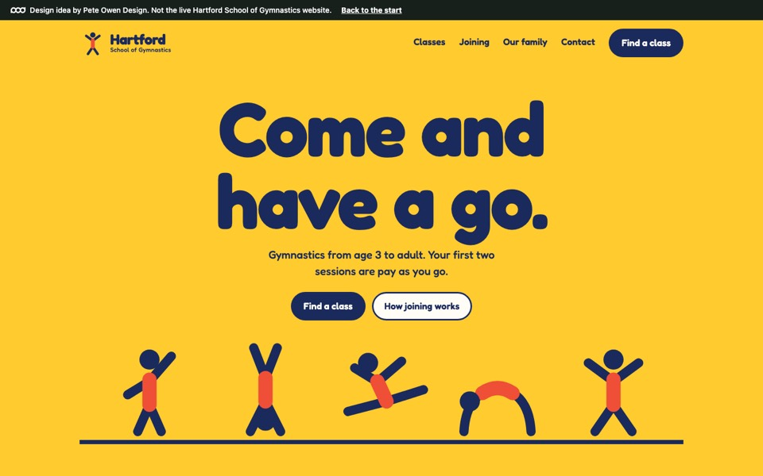
The same bendy gymnasts in a warmer, sunnier set of colours.
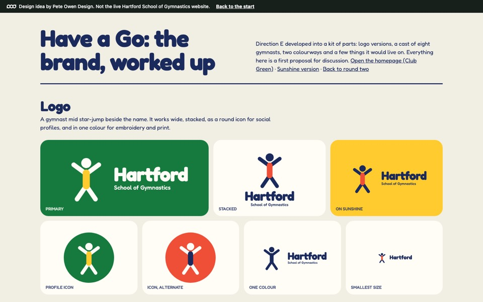
The Have a Go logo, colours, lettering and characters on one sheet.
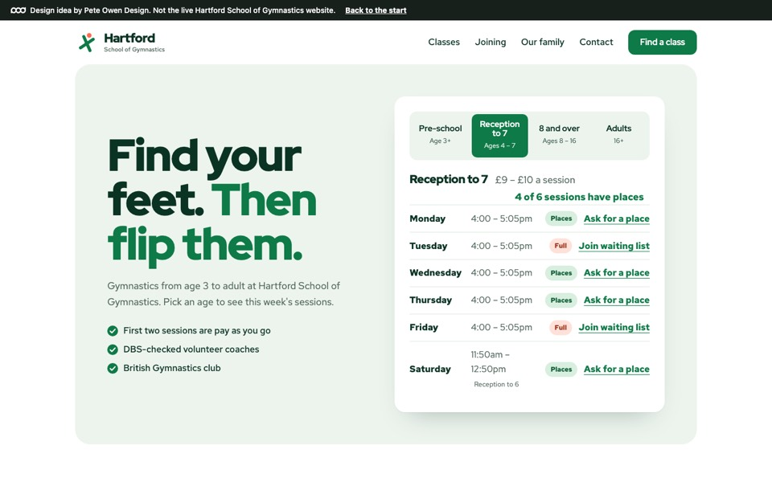
Clean and modern, with one cartwheeling mark and the timetable in the first screen.
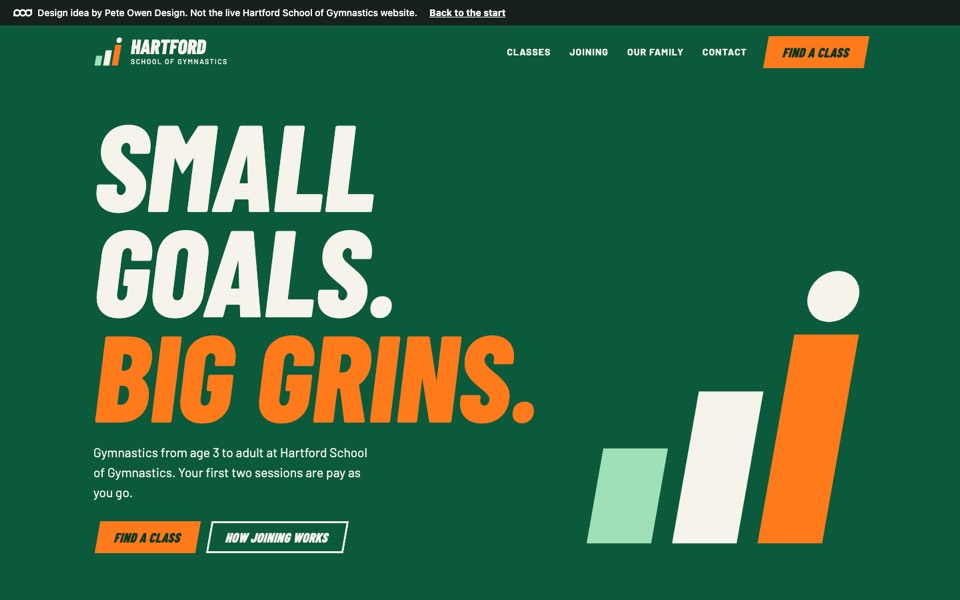
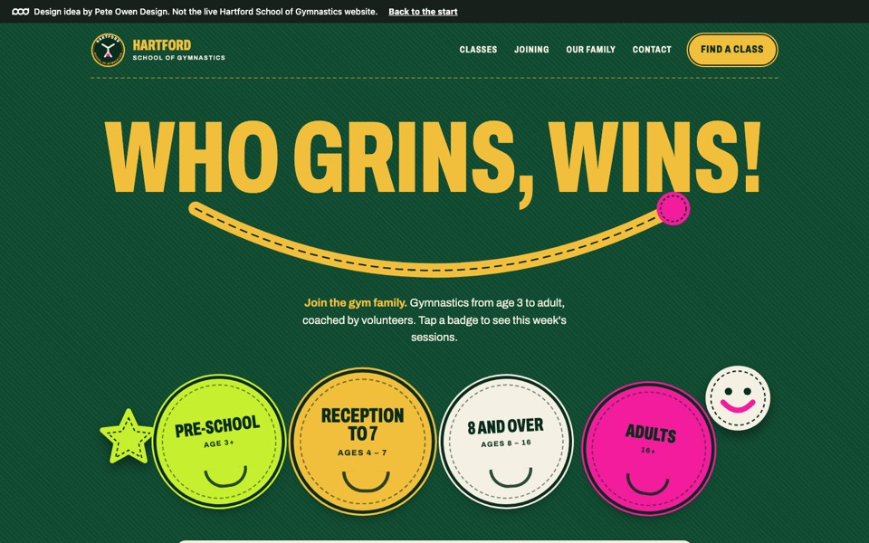
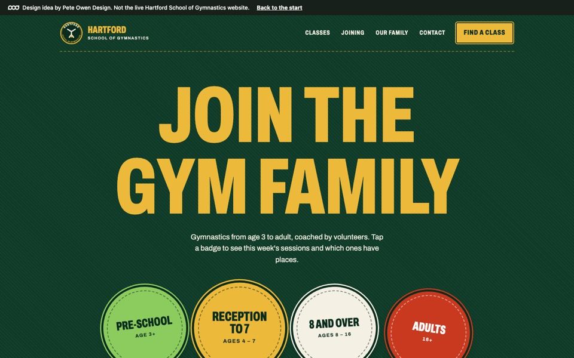
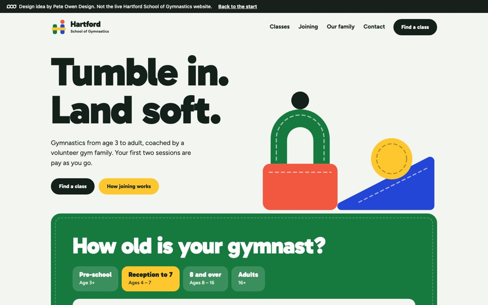
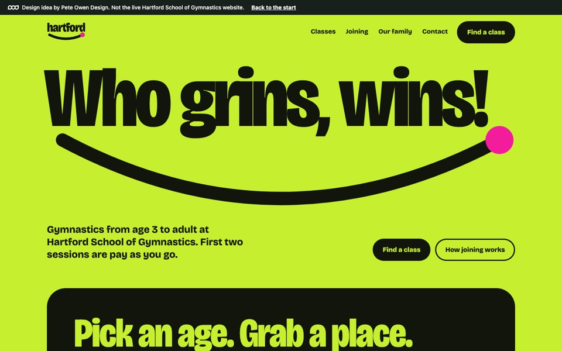